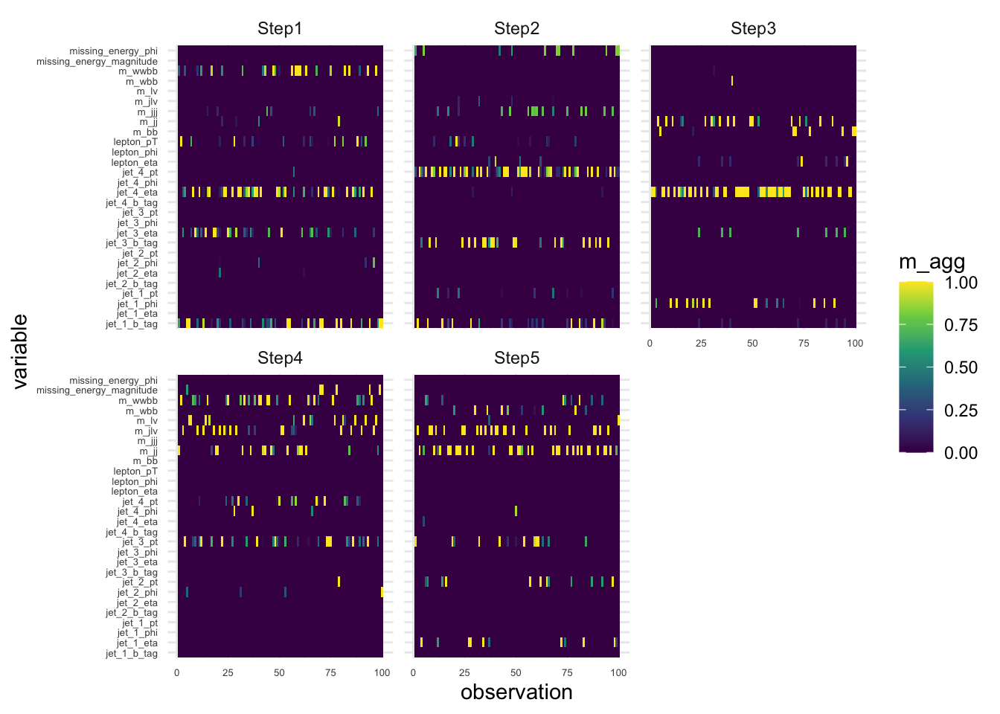

torch,tidymodels,and high-energy physics
Attention
Rでtabnetを実装している記事の日本語訳と写経です。 日本語訳はdeeplぶっ込み&コピペ。()とappendixは私の補足。
Keydana(2021,Feb.11).RStudioAIBlog:torch,tidymodels,andhigh-energyphysics.Retrievedfromhttps://blogs.rstudio.com/tensorflow/posts/2021-02-11-tabnet/
torch,tidymodels,and high-energy physics
今日は「TabNet」のTorch実装である「Tabnet」を紹介します。
tidymodelsフレームワークと完全に統合された“AttentiveInterpretableTabularLearning”のTorch実装であるtabnetを紹介します。
tidymodelsのおかげで、ハイパーパラメータのチューニング（ディープラーニングでは面倒なことが多い）が便利で楽しいものになりました。
で、何がクリックベイト（高エネルギー物理学）なのか？ただのクリックベイトではありません。TabNetを紹介するために、UCIMachineLearningRepositoryで公開されているHiggsデータセット（Baldi,Sadowski,andWhiteson(2014)）を使います。あなたのことは知らないが、私はいつも、物事を学ぶモチベーションを高めてくれるデータセットを使うのが好きだ。しかし、その前に、この記事の主役たちと知り合いになりましょう!Baldi,P.,P.Sadowski,andD.Whiteson.2014.“ディープラーニングを用いた高エネルギー物理学におけるエキゾチック粒子の探索”ネイチャー・コミュ
TabNet
TabNetはArikとPfister(2020)で紹介されました。これは3つの理由で興味深い。
ディープラーニングがまだあまり評価されていない分野である表形式データに対して非常に競争力の高い性能を主張している。
TabNetには解釈可能性の特徴が設計上含まれている。
自己監視下での事前学習で大幅に利益を得ることができると主張されていますが、これもまた、この分野では言及するに値しません。
この記事では、(3)については触れませんが、(2)を拡張して、TabNetの内部機能にアクセスする方法を説明します。 RからTabNetを使うには？torchのエコシステムには、同名のモデルを実装しているだけでなく、tidymodelsのワークフローの一部としても利用できるパッケージ、tabnetがあります。
tidymodels
Rを使用する多くのデータサイエンティストにとって、tidymodelsフレームワークは見慣れたものではないでしょう。tidymodelsはモデルのトレーニング、ハイパーパラメータの最適化、推論に高レベルで統一されたアプローチを提供します。 tabnetは、tidymodelsのワークフローをすべて利用できる最初の（多くの中でも特に期待している）Torchモデルです：データの前処理からハイパーパラメータのチューニング、性能評価、推論まで。最初のものと最後のものは必須ではありませんが、チューニングの経験はなくてはならないものではないでしょう。
Using tabnet with tidymodels
この記事では、まず、論文で報告されているハイパーパラメータの設定を利用したタブネットを利用したワークフローを簡単に紹介します。
次に、Tidymodelsを使ったハイパーパラメータ検索を開始し、基本的なことに焦点を当てながら、自由に掘り下げていきます。
最後に、解釈可能性の約束に立ち返り、タブネットが提供するものを実演し、短い議論で締めくくります。
In the flow with TabNet
いつものように、必要なライブラリをすべて読み込むことから始めます。
また、Torch側だけでなく、R側にもランダムなシードを設定します。
モデルの解釈がタスクの一部になっている場合、ランダムな初期化の役割を調査したいと思うでしょう。
library(torch)
library(tabnet)
library(tidyverse)
library(tidymodels)
library(finetune) # to use tuning functions from the new finetune package
library(vip) #to plot feature importances
set.seed(777)
torch_manual_seed(777)次に、データセットをロードします.
#downloadfromhttps://archive.ics.uci.edu/ml/datasets/HIGGS
higgs<-read_csv(
"data/phpZLgL9q.csv",
col_names=c("class","lepton_pT","lepton_eta","lepton_phi","missing_energy_magnitude",
"missing_energy_phi","jet_1_pt","jet_1_eta","jet_1_phi","jet_1_b_tag",
"jet_2_pt","jet_2_eta","jet_2_phi","jet_2_b_tag","jet_3_pt","jet_3_eta",
"jet_3_phi","jet_3_b_tag","jet_4_pt","jet_4_eta","jet_4_phi","jet_4_b_tag","m_jj","m_jjj","m_lv","m_jlv","m_bb","m_wbb","m_wwbb"),
skip=1,
col_types="fdddddddddddddddddddddddddddd"
)%>%
drop_na()## Warning: 9 parsing failures.
## row col expected actual file
## 98050 jet_4_phi a double ? 'data/phpZLgL9q.csv'
## 98050 jet_4_b_tag a double ? 'data/phpZLgL9q.csv'
## 98050 m_jj a double ? 'data/phpZLgL9q.csv'
## 98050 m_jjj a double ? 'data/phpZLgL9q.csv'
## 98050 m_lv a double ? 'data/phpZLgL9q.csv'
## ..... ........... ........ ...... ....................
## See problems(...) for more details.(注：本文中のデータは重く解凍できなかったため、以下のサイトでDLした。https://www.openml.org/d/23512 また、naを含む行は除去した。)
このデータは何ですか？高エネルギー物理学では、新しい粒子の探索は、CERNの大型ハドロン衝突型加速器などの強力な素粒子加速器で行われます。実際の実験に加えて、シミュレーションも重要な役割を果たしています。シミュレーションでは、異なる基礎となる仮説に基づいて「測定」データが生成され、その結果、互いに比較できる分布が得られます。シミュレーションされたデータの尤度が与えられれば、その仮説を推論することが目的となります。
上記のデータセット（Baldi,Sadowski,andWhiteson(2014)）は、まさにそのようなシミュレーションから得られたものです。2つの異なるプロセスを仮定して、どのような特徴が測定できるかを調べています。最初のプロセスでは、2つのグルーオンが衝突し、重いヒッグス粒子が生成されます。2つ目のプロセスでは、2つのグルーオンの衝突によってトップクォークが生成され、これがバックグラウンドプロセスです。
どちらの過程も、異なる中間体を経て同じ最終生成物になるので、これらを追跡しても意味がありません。そこで著者らが行ったのは、レプトン（電子と陽子）や粒子ジェットなどの崩壊生成物の運動学的特徴（具体的には運動量）をシミュレーションすることでした。さらに、領域知識を前提とした多くの高レベルの特徴を構築しました。彼らの論文では、他の機械学習手法とは対照的に、低レベルの特徴（運動量）のみを提示した場合と、高レベルの特徴のみを提示した場合とでは、ディープニューラルネットワークの性能がほぼ同じであることが示されています。
確かに、これらの結果をタブネットでダブルチェックして、それぞれの特徴の重要度を見るのは面白いでしょう。しかし、データセットのサイズを考えると、無視できないほどの計算リソース（と忍耐力）が必要になります。
サイズといえば、ちょっと見てみましょう。
higgs%>%glimpse()## Rows: 98,049
## Columns: 29
## $ class <fct> 1, 1, 0, 1, 0, 1, 1, 1, 1, 1, 0, 1, 1, 1, 0…
## $ lepton_pT <dbl> 0.9075421, 0.7988347, 1.3443848, 1.1050090,…
## $ lepton_eta <dbl> 0.3291473, 1.4706388, -0.8766260, 0.3213556…
## $ lepton_phi <dbl> 0.359411865, -1.635974765, 0.935912728, 1.5…
## $ missing_energy_magnitude <dbl> 1.4979699, 0.4537732, 1.9920501, 0.8828076,…
## $ missing_energy_phi <dbl> -0.31300953, 0.42562917, 0.88245440, -1.205…
## $ jet_1_pt <dbl> 1.0955306, 1.1048746, 1.7860659, 0.6814661,…
## $ jet_1_eta <dbl> -0.55752492, 1.28232229, -1.64677775, -1.07…
## $ jet_1_phi <dbl> -1.58822978, 1.38166428, -0.94238251, -0.92…
## $ jet_1_b_tag <dbl> 2.173076, 0.000000, 0.000000, 0.000000, 2.1…
## $ jet_2_pt <dbl> 0.8125812, 0.8517372, 2.4232647, 0.8008721,…
## $ jet_2_eta <dbl> -0.21364193, 1.54065895, -0.67601579, 1.020…
## $ jet_2_phi <dbl> 1.2710146, -0.8196895, 0.7361587, 0.9714065…
## $ jet_2_b_tag <dbl> 2.214872, 2.214872, 2.214872, 2.214872, 0.0…
## $ jet_3_pt <dbl> 0.4999940, 0.9934899, 1.2987198, 0.5967613,…
## $ jet_3_eta <dbl> -1.261431813, 0.356080115, -1.430738091, -0…
## $ jet_3_phi <dbl> 0.73215616, -0.20877755, -0.36465818, 0.631…
## $ jet_3_b_tag <dbl> 0.000000, 2.548224, 0.000000, 0.000000, 0.0…
## $ jet_4_pt <dbl> 0.3987009, 1.2569546, 0.7453127, 0.4799989,…
## $ jet_4_eta <dbl> -1.13893008, 1.12884760, -0.67837882, -0.37…
## $ jet_4_phi <dbl> -0.0008191102, 0.9004608393, -1.3603563309,…
## $ jet_4_b_tag <dbl> 0.000000, 0.000000, 0.000000, 0.000000, 3.1…
## $ m_jj <dbl> 0.3022199, 0.9097533, 0.9466525, 0.7558565,…
## $ m_jjj <dbl> 0.8330482, 1.1083305, 1.0287037, 1.3610570,…
## $ m_lv <dbl> 0.9856997, 0.9856922, 0.9986561, 0.9866097,…
## $ m_jlv <dbl> 0.9780984, 0.9513313, 0.7282806, 0.8380846,…
## $ m_bb <dbl> 0.7797322, 0.8032515, 0.8692002, 1.1332952,…
## $ m_wbb <dbl> 0.9923558, 0.8659244, 1.0267365, 0.8722449,…
## $ m_wwbb <dbl> 0.7983426, 0.7801176, 0.9579040, 0.8084865,…(注：2行目以降は本文のデータと一致している様子。行数は本文データとは不一致。) 106
1,100万個の“オブザベーション”(のようなもの)-多いですね!TabNet論文（ArikandPfister(2020)）の著者のように、我々はこれらのうち50万個を検証に使用します（彼らとは異なり、87万回の反復学習はできません！）。しかし、彼らとは異なり、870,000回の反復学習はできません！）。 108
最初の変数であるクラスは、ヒッグス粒子が存在するかどうかによって、1か0かのどちらかになります。実験では、衝突のごく一部がヒッグス粒子のいずれかを生成するだけですが、このデータセットでは、どちらのクラスもほぼ等しく頻繁に生成されます。
予測因子に関しては、最後の7つは高レベルのものです。他はすべて「測定された」ものです。
データが読み込まれたので、tidymodelsのワークフローを構築する準備ができました。
1.データ分割
n<-nrow(higgs)
n_test<-1000
test_frac<-n_test/n#(本文ミス？)
split<-initial_time_split(higgs,prop=1-test_frac)
train<-training(split)%>%as.data.frame()
test<-testing(split)%>%as.data.frame()2.レシピ作成
他のすべての機能からクラスを予測したいと考えています。
rec<-recipe(class~.,train)3.parsnipモデル作成
渡されるパラメータは，TabNet論文で報告されているもので，このデータセットで使用されているSサイズモデルのバリアントです．
#hyperparametersettings(apartfromepochs)aspertheTabNetpaper(TabNet-S)
mod<-tabnet(epochs=3,batch_size=4669,decision_width=24,attention_width=26,
num_steps=5,penalty=0.000001,virtual_batch_size=512,momentum=0.6,
feature_reusage=1.5,learn_rate=0.02)%>%
set_engine("torch",verbose=TRUE)%>%
set_mode("classification")(learningrateは大きめ、batchsize小さめに変更))
Appendix
パラメーターとその内容
| パラメーター | 内容 |
|---|---|
| epochs | 試行回数 |
| batch_size | サンプル数 |
| num_steps | int)Number of steps in the architecture(usually between 3 and 10) |
| decision_width| | (int)決定予測層の幅。値が大きいほど、オーバーフィットのリスクがあるモデルの容量が大きくなります。値は通常8から64の範囲です。（n_d |
| attention_width | (int)各マスクに対する注目埋め込みの幅。論文によると、通常はn_d=n_aが良いとされています。(default=8)(n_a |
| feature_reusage | (float)マスクにおける特徴の再利用のための係数です。1に近い値を指定すると、レイヤ間の相関が最も少ないマスク選択になります。値の範囲は1.0から2.0です。 |
| virtual_batch_size | (int)「ゴーストバッチ正規化」で使用するミニバッチのサイズ(default=128) |
| momentum | Momentum for batch normalization,typically ranges from 0.01 to 0.4(default=0.02) |
| num_independent | Number of independent Gated Linear Units layers at each step step.Usual values range from 1 to 5. |
| num_shared | Number of shared Gated Linear Units at each step Usual values range from 1 to 5 |
| learn_rate | 学習率 |
| penalty | これは、原著論文で提案されているような余分なスパリティ損失係数である。この係数が大きければ大きいほど、特徴選択の面でモデルがより鮮明になります。問題の難易度によっては、この値を下げることで解決できるかもしれません。 |
4.ワークフローにバンドル
wf<-workflow()%>%
add_model(mod)%>%
add_recipe(rec)5.モデル訓練
これには時間がかかります。訓練が終わったら、訓練したparsnipモデルを保存します。
fitted_model<-wf%>%fit(train)## [Epoch 001] Loss: 3.175046## [Epoch 002] Loss: 1.633342## [Epoch 003] Loss: 1.193075#parsnipモデルにアクセスし，RDS形式で保存します．
#♪あなたがこれを読んだ時には、素敵なラッパーが存在するかもしれません。
#https://github.com/mlverse/tabnet/issues/27を参照してください。
#fitted_model$fit$fit$fit%>%saveRDS("saved_model.rds")3エポック後、損失は0.609でした。(注:本データではlossは異なります。)
##6.予測/精度計算
preds<-test%>%
bind_cols(predict(fitted_model,test))
yardstick::accuracy(preds,class,.pred_class)## # A tibble: 1 x 3
## .metric .estimator .estimate
## <chr> <chr> <dbl>
## 1 accuracy binary 0.518TabNet論文で報告されている精度(0.783)には到達しませんでしたが、ほんの一部の時間しか訓練していません。
ニューラルネットワークを簡単に学習する方法としては、とても良い方法だった！と思っている方のために、ハイパーパラメータのチューニングがどれだけ簡単にできるかを見てみましょう。
-ハイパーパラメータのチューニングがどれだけ簡単にできるかを待ってみてください。実際、待つ必要はありません。
TabNet tuning
ハイパーパラメータのチューニングのために、tidymodelsフレームワークはクロスバリデーションを利用します。かなりのサイズのデータセットでは、多少の時間と忍耐が必要です；この記事では、オブザベーションの1/1,000を使います。
上記のワークフローへの変更は、モデル仕様から始まります。ほとんどの設定を固定したままにして、TabNet固有のハイパーパラメータであるdecision_width、attention_width、num_stepsを変更するとします。
mod<-tabnet(epochs=1,batch_size=4669,decision_width=tune(),attention_width=tune(),
num_steps=tune(),penalty=0.000001,virtual_batch_size=512,momentum=0.6,
feature_reusage=1.5,learn_rate=tune())%>%
set_engine("torch",verbose=TRUE)%>%
set_mode("classification")ワークフローの作成は以前と同じように見えます。
wf<-workflow()%>%
add_model(mod)%>%
add_recipe(rec)次に、興味のあるハイパーパラメータの範囲を指定して、dialsパッケージのグリッド構築関数を呼び出してグリッドを構築します。デモのためでなければ、8つ以上の選択肢を用意して、より大きなサイズをgrid_max_entropy()に渡したいと思うでしょう。
(注：sizeを更に小さめに変更)
grid<-
wf%>%
parameters()%>%
update(
decision_width=decision_width(range=c(20,40)),
attention_width=attention_width(range=c(20,40)),
num_steps=num_steps(range=c(4,6))
)%>%
grid_max_entropy(size=4)
grid## # A tibble: 4 x 4
## learn_rate decision_width attention_width num_steps
## <dbl> <int> <int> <int>
## 1 0.00000000406 28 26 6
## 2 0.000411 30 39 4
## 3 0.00174 37 25 5
## 4 0.00000000135 20 25 5空間を探索するために、新しいfinetuneパッケージのtune_race_anova()を使用し、5倍のクロスバリデーションを利用しています。
(注：cvも小さめに変更)
ctrl<-control_race(verbose_elim=TRUE)
folds<-vfold_cv(train,v=3)
set.seed(777)
# res<-wf%>%
# tune_race_anova(
# resamples=folds,
# grid=grid,
# control=ctrl
# )これで、最適なハイパーパラメータの組み合わせを抽出できるようになりました。
# res%>%show_best("accuracy")%>%select(-c(.estimator,.config))これ以上便利なチューニングは想像に難くありません。
TabNet interpretability features
TabNetの最も顕著な特徴は、決定木にヒントを得て、明確なステップで実行されることです。各ステップでは、元の入力特徴を再度見て、前のステップで学習した教訓に基づいて、どの特徴を考慮するかを決定します。具体的には、注意メカニズムを用いて、特徴量に適用される疎なマスクを学習する。
さて、これらのマスクは「単なる」モデル重みであるため、それらを抽出して特徴の重要性についての結論を導き出すことができます。どのように進めるかによって、次のようなことができます。
-マスクの重みをステップごとに集約し，結果として，全体的な変数重要度を得ることができます．
-少数のテストサンプルでモデルを実行し，ステップごとに集約して，観測ごとの変数重要度を得る．
-モデルをいくつかのテストサンプルで実行し、ステップごとの重み付けと同様に観測値から個々の重みを抽出する。
以上をtabnetで実現する方法です。
PER-FEATUREIMPORTANCES
パート1の最後で終わらせたfitting_modelworkflowobjectの続きです。vip::vipはparsnipモデルから直接特徴量を表示することができます。
fit<-pull_workflow_fit(fitted_model)
vip(fit)+theme_minimal()
これら2つのハイレベル機能が共に支配的で、全体の注目度の約50%を占めています。
第4位にランクされた第3位のハイレベル機能とともに、これらは「重要度の高い空間」の約60%を占めています。
OBSERVATION-LEVELFEATUREIMPORTANCES
特徴の重要度を抽出するために、テスト・セットの最初の100個のオブザベーションを選択します。 TabNetがどのようにスパースを強制するかにより、多くの特徴が利用されていないことがわかります。
ex_fit<-tabnet_explain(fit$fit,test[1:100,])
ex_fit$M_explain%>%
mutate(observation=row_number())%>%
pivot_longer(-observation,names_to="variable",values_to="m_agg")%>%
ggplot(aes(x=observation,y=variable,fill=m_agg))+
geom_tile()+
theme_minimal()+
scale_fill_viridis_c()PER-STEP,OBSERVATION-LEVELFEATUREIMPORTANCES
最後に、同じオブザベーションの選択で、再びマスクを検査しますが、今回は決定ステップごとに検査します。
ex_fit$masks%>%
imap_dfr(~mutate(
.x,
step=sprintf("Step%d",.y),
observation=row_number()
))%>%
pivot_longer(-c(observation,step),names_to="variable",values_to="m_agg")%>%
ggplot(aes(x=observation,y=variable,fill=m_agg))+
geom_tile()+
theme_minimal()+
theme(axis.text=element_text(size=5))+
scale_fill_viridis_c()+
facet_wrap(~step)
これはいいですね。TabNetがさまざまな時期にさまざまな機能を利用していることがよくわかります。 では、これをどう活用すればいいのでしょうか？それは人それぞれです。このトピックの社会的な重要性（解釈可能性、説明可能性などと呼んでいます）を考えると、この記事の最後に簡単な議論をしておきましょう。
(これ以降は翻訳から除外)